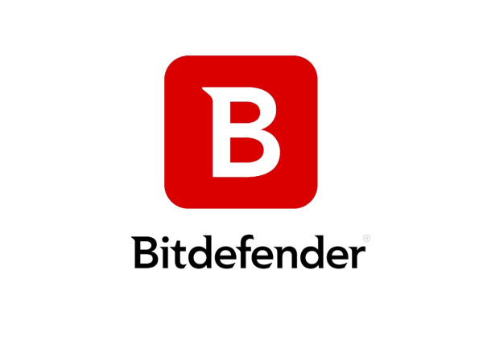

Phishing
Definition
Phishing is the fraudulent practice of sending emails purporting to be from reputable companies in order to induce individuals to reveal personal information, such as passwords and credit card numbers. padding-top: 60px; on the main > .container.
Types of Phishing
There are various types of phishing. We will be listing the most common types in a list that will habve a link to their definition.
- Email Spoofing
- Spear Phishing
- Whaling
- Voice Phishing
- Voice Phishing
Prevention
The probably most effective way to protect yourself from Phishing attacks is not opening emails that contain links which trick you into giving your bank data or passwords. This is the most ocurrent way of a Phishing attack and people should really stop doing it.Anti-spyware and firewall settings should be used to prevent phishing attacks and users should update the programs regularly. Firewall protection prevents access to malicious files by blocking the attacks. Antivirus software scans every file which comes through the Internet to your computer. One anti-phishing software that we recommend is Bitdefender Antivirus Free Edition. It is one if not the best anti-phishing software that do their job silently. It is so silent that it does not even ask you any questions when you install it on your enterprise network. It believes in letting its work do the talking.
